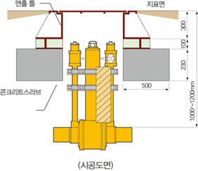
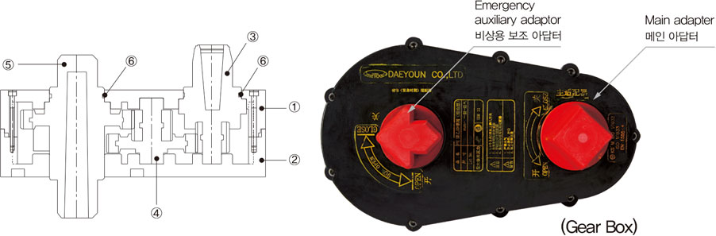

볼밸브의 장점
고객과의 약속을 최우선으로 생각하며, 최고의 제품만을 고집하는 기업이 되도록 노력하겠습니다.
가스용, 수도용 PE 볼 밸브 장점 및 시공 시 주의사항
| PE 볼 밸브의 장점 |  |
|
|
|---|---|---|---|
| 운전 시 주의사항 | 통상적으로 밸브 계/폐 시 메인 아답타(좌측)를 사용하고, 비상시에는 비상용 보조 아답타를 사용한다. | ||
| 시공 시 주의사항 |
|
||
PE 볼 밸브 구조 및 재질
볼 밸브 부속 재질


PE 볼 밸브 구조
| NO | 품명 | 재질 |
|---|---|---|
| 1 | 바디 | 폴리에틸렌 (PE) |
| 2 | 엔드 | 폴리에틸렌 (PE) |
| 3 | 볼 | 폴리프로필렌 (PP) |
| 4 | 볼 시트 | 니트릴부타디엔 고무 (NBR) |
| 5 | 리테이너 | 폴리프로필렌 (PP) |
| 6 | 스템 | 아세탈 |
| 7 | 아답타 | 폴리프로필렌 (PP) |
| 8 | 스템 O-RING | 니트릴부타디엔 고무 (NBR) |
| 9 | 아답타 O-RING | 니트릴부타디엔 고무 (NBR) |
PE 볼 밸브 사양
| 구분 | 특성 및 사양 | |
|---|---|---|
| 사용 용도 | 가스용 | 수도용 |
| 사용 재질 | PE80 (MDPE) | PE100 (HDPE) |
| PE100 (HDPE) | ||
| 사용 압력 | PE80 : 4bar / PE100 : 10bar | 16bar |
| SDR | SDR : 11, SDR : 17 (소비자 선택가능) | |
| 사용 온도 | -29℃ ~ 60℃ | |
| 엔드 시공방법 | 버트 융착, 전자식 소켓 융착 가능 | |
| BORE 타입 | FULL BORE TYPE | |
| STEM TYPE | SHORT STEM TYPE or LONG STEM TYPE | |
| PURGE TYPE | Standard Type, NO Purge Type, 1 Purge Type, 2 Purge Type (소비자 선택가능) | |
| 바디와 엔드 융착방식 | 전자식 소켓 융착 / 버트 융착 | |
| 개폐 방식 | OPEN : 1/4 Turn Left, CLOSE : 1/4 Turn Right | |
Special Ball Valve

“고객의 요청 시 제품의 높이, 바이패스, 플랜지 퍼지타입 등 Special 제작이 가능함.”
기어박스 구성도 및 제품규격
제품구조
| NO | 품명 | 재질 |
|---|---|---|
| 1 | 기어박스 상측 | PE |
| 2 | 기어박스 하측 | PE |
| 3 | 구동기어 | PP+GL |
| 4 | 중심기어 | PP+GL |
| 5 | 서브스템기어 | PP+GL |
| 6 | 오링 | NBR |